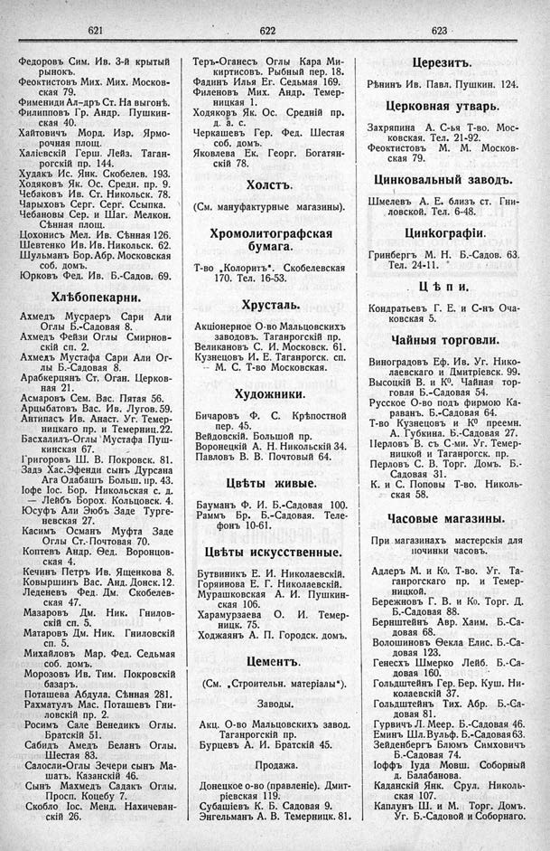

Лист источника 341
Скан

Распознанный текст
621
Федоровъ Сим. Ив. 3-й крытый
рынокъ.
Феоктистовъ Мих. Мих. Москов-
ская 79.
Фимениди Ал-дръ Ст. На выгонѣ.
Филипповъ Гр. Андр. Пушкин-
ская 40.
Хайтовичъ Морд. Изр. Ярмо-
рочная площ.
Халіевскій Герш. Лейз. Таган-
рогскій пр. 144.
Худакъ Ис. Янк. Скобелев. 193.
Ходяковъ Як. Ос. Средн. пр. 9.
Чебаковъ Ив. Ст. Никольск. 78.
Чарыховъ Серг. Серг. Ссылка.
Чебановы Сер. и Шаг. Мелкон.
Сѣнная площ.
Цохонисъ Мел. Ив. Сѣнная 126.
Шевтенко Ив. Ив. Никольск. 62.
Шульманъ Бор. Абр. Московская
соб. домъ.
Юрковъ Фед. Ив. Б.-Садов. 69.
Хлѣбопекарни.
Ахмедъ Мусраеръ Сари Али
Оглы Б.-Садовая 8.
Ахмедъ Фейзи Оглы Смирнов-
скій сп. 2.
Ахмедъ Мустафа Сари Али Ог-
лы Б.-Садовая 8.
Арабкерцянъ Ст. Оган. Церков-
ная 21.
Асмаровъ Сем. Вас. Пятая 56.
Арцыбатовъ Вас. Ив. Лугов. 59.
Антипасъ Ив. Анаст. Уг. Темер-
ницкаго пр. и Темерниц. 22.
Басхалилъ-Оглы Мустафа Пуш-
кинская 67.
Григоровъ Ш. В. Покровск. 81.
Задэ Хас. Эфенди сынъ Дурсана
Ага Одабашъ Больш. пр. 43.
Іофе Іос. Бор. Никольская с. д.
— Лейбъ Борох. Кольцовск. 4.
Юсуфъ Али Эюбъ Заде Турге-
невская 27.
Касимъ Османъ Муфта Заде
Оглы Ст.-Почтовая 70.
Коптевъ Андр. Ѳед. Воронцов-
ская 4.
Кечинъ Петръ Ив. Ященкова 8.
Ковыршинъ Вас. Анд. Донск. 12.
Леденевъ Фед. Дм. Скобелев-
ская 47.
Мазаровъ Дм. Ник. Гнилов-
скій сп. 5.
Матаровъ Дм. Ник. Гниловскій
сп. 5.
Михайловъ Мар. Фед. Седьмая
соб. домъ.
Морозовъ Ив. Тим. Покровскій
базаръ.
Поташева Абдула. Сѣнная 281.
Рахматулъ Мас. Поташевъ Гни-
ловскій пр. 2.
Росимъ Сале Венедикъ Оглы.
Братскій 51.
Сабидъ Амедъ Беланъ Оглы.
Шестая 83.
Салосли-Оглы Зечери сынъ Ма-
шатъ. Казанскій 46.
Сынъ Махмедъ Садакъ Оглы.
Просп. Коцебу 7.
Скобло Іос. Менд. Нахичеван-
скій 26.
622
Теръ-Оганесъ Оглы Кара Ми-
киртисовъ. Рыбный пер. 18.
Фадинъ Илья Ег. Седьмая 169.
Филеновъ Мих. Андр. Темер-
ницкая 1.
Ходяковъ Як. Ос. Средній пр.
д. а. с.
Черкашевъ Гер. Фед. Шестая
соб. домъ.
Яковлева Ек. Георг. Богатян-
скій 78.
Холстъ.
(См. мануфактурные магазины).
Хромолитографская
бумага.
Т-во „Колоритъ“. Скобелевская
170. Тел. 16-53.
Хрусталь.
Акціонерное О-во Мальцовскихъ
заводовъ. Таганрогскій пр.
Великановъ С. И. Московск. 61.
Кузнецовъ И. Е. Таганрогск. сп.
-- М. С. Т-во Московская.
Художники.
Бичаровъ Ф. С. Крѣпостной
пер. 45.
Вейдовскій. Большой пр.
Воронецкій А. Н. Никольскій 34.
Павловъ В. В. Почтовый 64.
Цвѣты живые.
Бауманъ Ф. И. Б.-Садовая 100.
Раммъ Бр. Б.-Садовая. Теле-
фонъ 10-61.
Цвѣты искусственные.
Бутвиникъ Е. И. Николаевскій.
Горяинова Е. Г. Николаевскій.
Мурашковская А. И. Пушкин-
ская 106.
Харамурзаева О. И. Темер-
ницк. 75.
Ходжаянъ А. П. Городск. домъ.
Цементъ.
(См. „Строительн. матеріалы“).
Заводы.
Акц. О-во Мальцовскихъ завод.
Таганрогскій пр.
Бурцевъ А. И. Братскій 45.
Продажа.
Донецкое о-во (правленіе). Дмит-
ріевская 119.
Субашіевъ К. Б. Садовая 9.
Энгельманъ А. В. Темерницк. 81.
623
Церезитъ.
Рѣнинъ Ив. Павл. Пушкин. 124.
Церковная утварь.
Захряпина А. С-ья Т-во. Мос-
ковская. Тел. 21-92.
Феоктистовъ М. М. Москов-
ская 79.
Цинковальный заводъ.
Шмелевъ А. Е. близъ ст. Гни-
ловской. Тел. 6-48.
Цинкографіи.
Гринбергъ М. Н. Б.-Садов. 63.
Тел. 24-11.
Цѣпи.
Кондратьевъ Г. Е. и С-нъ Оча-
ковская 5.
Чайныя торговли.
Виноградовъ Еф. Ив. Уг. Нико-
лаевскаго и Дмитріевск. 99.
Высоцкій В. и К⁰. Чайная тор-
говля Б.-Садовая 54.
Русское О-во подъ фирмою Ка-
раванъ. Б.-Садовая 64.
Т-во Кузнецовъ и К⁰ преемн.
А. Губкина. Б.-Садовая 27.
Перловъ В. съ С-ми. Уг. Темер-
ницкой и Таганрогск. пр.
Перловъ С. В. Торг. Домъ. Б.-
Садовая 31.
К. и С. Поповы Т-во. Николь-
ская 58.
Часовые магазины.
При магазинахъ мастерскія для
починки часовъ.
Адлеръ М. и Ко. Т-во. Уг. Та-
ганрогскаго пр. и Темер-
ницкой.
Бережновъ Г. В. и Ко. Торг. Д.
Б.-Садовая 88.
Бернштейнъ Авр. Хаим. Б.-Са-
довая 68.
Волошиновъ Ѳекла Елис. Б.-Са-
довая 123.
Генесхъ Шмерко Лейб. Б.-Са-
довая 160.
Гольдштейнъ Гер. Бер. Куш. Ни-
колаевскій 37.
Гольдштейнъ Тих. Абр. Б.-Са-
довая 81.
Гурвичъ Л. Меер. Б.-Садовая 46.
Еминъ Шл. Вульф. Б.-Садовая 63.
Зейденбергъ Блюмъ Симховичъ
Б.-Садовая 74.
Іоффъ Іуда Мовш. Соборный
д. Балабанова.
Каданскій Янк. Срул. Николь-
ская 107.
Каплунъ Ш. и М. Торг. Домъ.
Уг. Б.-Садовой и Соборнаго.